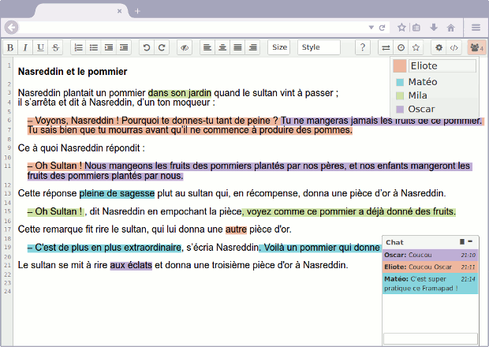

Qu'est-ce que c'est ?

Un « pad » est un éditeur de texte collaboratif en ligne. Les contributions de chaque utilisateur sont signalées par un code couleur, apparaissent à l’écran en temps réel et sont enregistrées au fur et à mesure qu’elles sont tapées.
Comment ça marche ?
- Créez un pad.
- Commencez à rédiger votre texte
- et invitez vos collaborateurs.
- Chaque participant se distingue par une couleur
- et peut tchatter avec le groupe.
- Si nécessaire, restaurez une ancienne version depuis l’historique
- et une fois votre travail terminé, exportez-le.
Envie d’une démonstration ?
Tutoriel vidéo
Pour vous aider, voici un tutoriel vidéo réalisé par Frédéric Véron, professeur de SVT dans l’Académie de Créteil.
Le logiciel
Framapad repose sur le logiciel libre Etherpad.
Il s’agit d’une instance parmi d’autres.
Etherpad est sous licence Apache 2.0.
Cultivez votre jardin
Pour participer au développement du logiciel, proposer des améliorations ou simplement le télécharger, rendez-vous sur le site de développement.
Si vous souhaitez installer ce logiciel pour votre propre usage et ainsi gagner en autonomie, nous vous aidons sur :